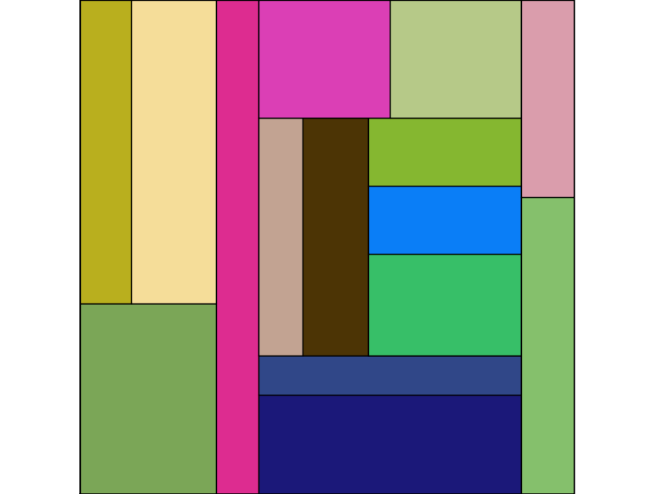

Treemaps are a nice way of showing tree information not based on a connected node approach.
See http://www.cs.umd.edu/hcil/treemap/
"""
Treemap builder using pylab.
Uses algorithm straight from http://hcil.cs.umd.edu/trs/91-03/91-03.html
James Casbon 29/7/2006
"""
import pylab
from matplotlib.patches import Rectangle
class Treemap:
def __init__(self, tree, iter_method, size_method, color_method):
"""create a tree map from tree, using itermethod(node) to walk tree,
size_method(node) to get object size and color_method(node) to get its
color"""
self.ax = pylab.subplot(111,aspect='equal')
pylab.subplots_adjust(left=0, right=1, top=1, bottom=0)
self.ax.set_xticks([])
self.ax.set_yticks([])
self.size_method = size_method
self.iter_method = iter_method
self.color_method = color_method
self.addnode(tree)
def addnode(self, node, lower=[0,0], upper=[1,1], axis=0):
axis = axis % 2
self.draw_rectangle(lower, upper, node)
width = upper[axis] - lower[axis]
try:
for child in self.iter_method(node):
upper[axis] = lower[axis] + (width * float(size(child))) / size(
node)
self.addnode(child, list(lower), list(upper), axis + 1)
lower[axis] = upper[axis]
except TypeError:
pass
def draw_rectangle(self, lower, upper, node):
print lower, upper
r = Rectangle( lower, upper[0]-lower[0], upper[1] - lower[1],
edgecolor='k',
facecolor= self.color_method(node))
self.ax.add_patch(r)
if __name__ == '__main__':
# example using nested lists, iter to walk and random colors
size_cache = {}
def size(thing):
if isinstance(thing, int):
return thing
if thing in size_cache:
return size_cache[thing]
else:
size_cache[thing] = reduce(int.__add__, [size(x) for x in thing])
return size_cache[thing]
import random
def random_color(thing):
return (random.random(),random.random(),random.random())
tree= ((5,(3,5)), 4, (5,2,(2,3,(3,2,2)),(3,3)), (3,2) )
Treemap(tree, iter, size, random_color)
pylab.show()
CategoryCookbookMatplotlib